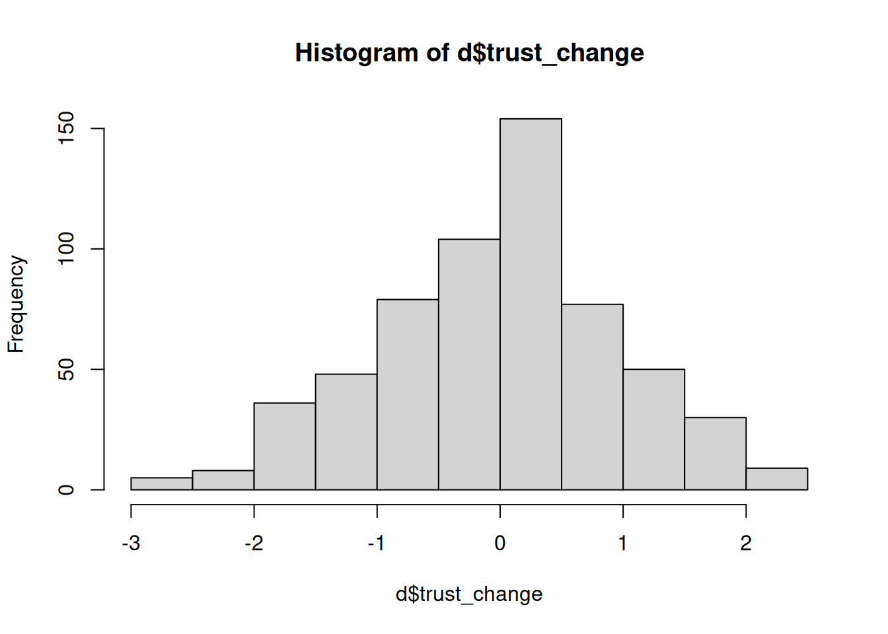

library(tidyverse)
d <- read_csv("https://data.dataliteracy.cc/simulated/practice_data.csv")7 Data Frames
NoteRequired packages and data for this chapter
7.1 Introducing the tidyverse
Installing the tidyverse
The tidyverse is collection of R packages that makes it much easier to import, manage and visualize data. To use the tidyverse, you only need to open the tidyverse package, and it will automatically open all of the tidyverse R packages.
Like any normal package, you need to first install it once:
install.packages('tidyverse')Then in every script that you use the package, you open it with library:
library(tidyverse)When you first run this code, it will print a message that shows you all the packages that it opened for you. Some of the most important ones that we’ll we using are:
- tibble. An optimized way for structuring rectangular data (basically: a spreadsheet of rows and columns)
- dplyr. Functions for manipulating tibbles: select and rename columns, filter rows, mutate values, etc.
- readr. Read data into R.
- ggplot2. One of the best visualization tools out there. Check out the gallery
WarningWhat about the ‘Conflicts’?
When opening the tidyverse, and when opening packages in general, you can get a Conflicts warning. A very common warning for the tidyverse is:
✖ dplyr::filter() masks stats::filter()
✖ dplyr::lag() masks stats::lag()So what does this mean, and should we be worried?
Since anyone can write new packages for R, it can happen that two packages provide functions with the same name. In this example, we see that the filter function exists in both the dplyr package (which we opened by opening the tidyverse), and in the stats package (which is included in base R). So now R needs to decide which version of the function to use when you type filter(). In this case, it says that the dplyr::filter() masks stats::filter(), meaning that it will now use the dplyr version.
In practice, this will rarely be a problem, because you seldom need two versions of a function in the same script. But if you ever do, there is a simple solution. Instead of just using filter(), you can type dplyr::filter() to specifically use this version. In the following code, we use this notation to specifically open the help page for dplyr::filter and stats::filter.
?dplyr::filter()
?stats::filter()
NoteThe tidyverse versus base R
Many of the things that the tidyverse allows you to do are also possible in base R (i.e. the basic installation of R). Base R also provides functions for importing, managing and visualizing data. So why do we need the tidyverse?
The tidyverse is an opinionated framework, which means that it doesn’t just enable you to do things, but also suggests how you should do things. The authors have thought long and hard about how to make data management easy, effective and intuitive (they have even written papers about it). This not only makes the tidyverse much easier and intuitive to learn, but also makes sure everyone writes their code in the same way, which improves transparency and shareability.
This is different from base R, which is designed to be a highly flexible programming language, that allows you to do almost anything. Accordingly, it is still worthwhile to learn base R at some point if you want to specialize more in computational research methods. But for our Communication Science program, and for many data science applications in general, you can do all your data management in the tidyverse.
Data management with the tidyverse
The tidyverse is built around the concept of tidy data (Wickham 2014). The main principles of tidy data are:
- Each variable must have its own column.
- Each observation must have its own row.
- Each value must have its own cell.
This type of data is also called a data frame, or a spreadsheet. What the tidyverse does is provide a set of tools that make it easy to work with this type of data. At the core of this is the tibble data structure. As a simple example, the following code creates a tibble containing respondents, their gender, and their height. We’ll call our tibble d (short for data).
d <- tibble(resp_id = c( 1, 2, 3, 4),
gender = c("M", "M", "F", "F"),
height = c(176, 165, 172, 160))The name d is now a tibble with 4 rows and 3 columns. Like any name in R, we can print it to see what it looks like:
d# A tibble: 4 × 3
resp_id gender height
<dbl> <chr> <dbl>
1 1 M 176
2 2 M 165
3 3 F 172
4 4 F 160The vast majority of data that we work with in the social sciences can be structured in this way. The rows typically represent our units of analysis (e.g., respondents, participants, texts, etc.), and the columns represent the variables that we measure on these units. This makes it imperative for us to learn how we can manage this type of data effectively. We need to be able to select columns, filter rows, mutate values, and summarize data. Sometimes we also need to pivot the data, or join it with other data. In this chapter you will learn how to do all of this with the tidyverse.
7.2 Read and write
Reading and writing data
R can read files from many types of file formats. Here we will focus on the csv format, which is one of the most common formats for storing and sharing rectangular data (i.e., data in rows and columns). Once you know how to read a CSV file, you can easily read other file formats as well (e.g., Excel, SPSS).
CSV files
NoteWhat is a CSV file?
CSV stands for Comma Separated Values. It is a simple text file, that you can open in any text editor. In order to store a data frame (i.e. data in rows and colums), it simply read every line as a row, and separates the columns by a comma (or sometimes another symbol, like a semicolon).
For example, the following CSV file contains a data frame with three columns: resp_id, gender, and height. The first row contains the column names, and the following rows contain the data.
resp_id,gender,height
1,M,176
2,M,165
3,F,172
4,F,160The benefit of this simplicity is that any respectable spreadsheet or statistical software (e.g., Excel, Google sheets, SPSS, Stata) can read it. This makes CSV files a great way to share and store data.
And just in case you’re worried, yes, CSV can also handle textual data. It uses some tricks to make sure that commas inside the text are not interpreted as column separators.
To show you how to work with CSV files, we’ll first import a dataset from the internet. Then we’ll show how to write this data to a CSV file on your computer, and how to read it back into R.
Importing data from a URL
To read CSV files into R, you can use the read_csv from the tidyverse (more specifically from the readr package). If you provide a URL, it will download the file from the internet. Here we read the data and assign it to the name d (short for data). You can use any name you like, but since you’ll be referring to this data a lot, it’s convenient to keep it short.
library(tidyverse)
d <- read_csv("https://data.dataliteracy.cc/simulated/practice_data.csv")Make sure to always check whether the data was imported correctly:
dYou can also view the data in a larger spreadsheet-like view using the View function. Either click on the name (d) in the Environment tab in RStudio (top right panel), or use the View function:
View(d)This will open a new tab in RStudio that shows all the data. In the top menu bar you can also filter the data and search for specific values, or click on column names to sort the data.
Writing data to a CSV file on your computer
You can use the write_csv function to write a tibble to a CSV file on your computer. If you just provide a file name, it will be saved in your current working directory.
write_csv(d, "practice_data.csv")Reading data from a CSV file on your computer
Now let’s read this file back into R. Since the file is in your working directory, you can just specify the file name:
d2 <- read_csv("practice_data.csv")You can check and verify that the data (d2) is indeed identical to the original data (d).
WarningCSV pitfalls to avoid
There are two important pitfalls to avoid when working with CSV files:
Pitfall 1: Corrupting the file by opening it in Excel
When you download a CSV file from the internet, some computers might immediately ask you whether you want to open it in your default spreadsheet program (e.g., Excel, Numbers). Do not do this, but instead download the file directly to your computer. If you open the file and accidentally save it, it can overwrite the CSV file with a different format. Excel in particular has a habit of breaking CSV files this way.
Pitfall 2: Different flavours of CSV files
There are different flavours of CSV files (for historic reasons). Even though we call them “comma separated values”, the separator is sometimes a semicolon or a tab. And depending on language, the decimal separator can be a comma or a dot. In particular, there are two most common versions of the CSV file. This is why tidyverse has two read_csv functions: read_csv and read_csv2. In general, you can just try read_csv first, and if it doesn’t work, try read_csv2.
Reading other file formats, like Excel and SPSS
Now that you know how to read and write CSV files, reading other file formats is a piece of cake. It works almost the same way, but you just need to download a package that can read the file format.
For instance, to read an Excel file, you can use the readxl package, which provides the read_excel function. To read an SPSS file, you can use the haven package, which provides the read_sav function. You might have to take care of some additional details, such as the sheet name in the Excel file, or the variable labels in the SPSS file. But once you’ve got the hang of managing your data with the tidyverse, you’ll be able to handle any data frames formats that come your way.
7.3 Select and rename
Selecting columns with select
Often you do not need to use all columns in your data, or you only need a subset of the columns for a specific analysis. You can do this with the select function.
First, let’s see what columns are in our data using the colnames function, which returns the column names of a data frame:
colnames(d) [1] "id" "age" "political_orientation"
[4] "political_interest" "np_subscription" "news consumption"
[7] "experiment_group" "trust_t1" "trust_t2"
[10] "trust_t1_item1" "trust_t1_item2" "trust_t1_item3"
[13] "trust_t1_item4" "trust_t1_item5" "trust_t2_item1"
[16] "trust_t2_item2" "trust_t2_item3" "trust_t2_item4"
[19] "trust_t2_item5" Selecting specific columns
The simplest way of using select is to explicitly specify the columns you want to keep. The first argument is the tibble (data frame) you want to select from, and the following arguments are the columns you want to keep. The following code returns a new tibble with only the columns id, age, and np_subscription.
select(d, id, age, np_subscription)# A tibble: 600 × 3
id age np_subscription
<dbl> <dbl> <chr>
1 1 21 no
2 2 42 yes
3 3 18 no
4 4 42 no
5 5 32 no
6 6 33 yes
7 7 21 no
8 8 46 yes
9 9 50 yes
10 10 63 yes
# ℹ 590 more rowsAs with any output, you can assign it to a variable to store the result.
ds <- select(d, id, age, np_subscription)Here we create a new tibble ds that only contains the columns id, age, and np_subscription. Whenever you import data into R, it is often a good idea to first select only the columns you need. While you could also overwrite the original tibble (d <- select(d, ...)) it is usually better to create a new tibble. There is no harm in having multiple tibbles in your environment, and if you give clear names to your tibbles, it will make your code more readable.
Selecting a range of columns
You can also specify a range of columns using the syntax first_column:last_column. For example, to select all columns from experiment_group to trust_t2:
select(d, experiment_group:trust_t2)This will return a new tibble with only the columns experiment_group, trust_t1, and trust_t2.
Note that here we did not assign the result to anything. So in this case R will just print the result to the console, but not store it in a variable.
Selecting and renaming columns
When you select a column, you can also rename it using the syntax new_name = old_name. The following code selects the columns experiment_group, trust_t1, and trust_t2, and renames them to group, trust_before, and trust_after:
select(d, group = experiment_group,
trust_before = trust_t1,
trust_after = trust_t2)Selecting columns that have spaces in the name
Sometimes columns names have spaces in them. This is a bit annoying to work with in R, because you need to then tell R where a name starts and ends. You can do this by using backticks (reverse quotes) around the column name. In our practice data, we need this to select the news consumption column. It is then often smart to immediately rename the column to something without spaces, such as just replacing them with underscores:
select(d, news_consumption = `news consumption`)Dropping columns
Instead of selecting which column to keep, you can also specify which columns to drop. You can do this by adding a minus sign in front of the column name. The following code drops the columns np_subscription and trust_t1:
select(d, -np_subscription, -trust_t1)This will return a new tibble with all columns except np_subscription and trust_t1.
Renaming columns with rename
Sometimes you only want to rename columns without selecting or dropping any. You can do this with the rename function, which works similarly to how you rename columns with select:
rename(d, group = experiment_group,
trust_before = trust_t1,
trust_after = trust_t2)In this case, we do rename the columns, but without dropping all the other columns.
7.4 Filter and arrange
Subsetting rows with filter()
The filter function can be used to select a subset of rows. The first argument of the filter function is the tibble you want to filter. The second argument is the condition that should be met for a row to be included in the result. Let’s say we want to select only the rows where the experiment_group column is equal to control. We can then use the == (is equal to) operator.
filter(d, experiment_group == 'control')# A tibble: 200 × 19
id age political_orientation political_interest np_subscription
<dbl> <dbl> <chr> <dbl> <chr>
1 1 21 right 5.24 no
2 2 42 center 2.28 yes
3 5 32 left 4.37 no
4 6 33 left 4.88 yes
5 8 46 left 3.28 yes
6 10 63 right 3.29 yes
7 17 32 left 3.83 yes
8 18 64 left 4.13 yes
9 21 61 left 2.99 yes
10 22 63 right 5.03 yes
# ℹ 190 more rows
# ℹ 14 more variables: `news consumption` <dbl>, experiment_group <chr>,
# trust_t1 <dbl>, trust_t2 <dbl>, trust_t1_item1 <dbl>, trust_t1_item2 <dbl>,
# trust_t1_item3 <dbl>, trust_t1_item4 <dbl>, trust_t1_item5 <dbl>,
# trust_t2_item1 <dbl>, trust_t2_item2 <dbl>, trust_t2_item3 <dbl>,
# trust_t2_item4 <dbl>, trust_t2_item5 <dbl>This gives us the 200 rows (out of 600) where the experiment_group is control.
We can use other common operators as well, such as >, <, >=, <=, and != (not equal). And we can also combine multiple conditions with the & (and) and | (or) operators.
For example, here we select all rows where the experiment_group is control and the age is greater than 30:
filter(d, experiment_group == 'control' & age > 30)A less common operator that is usefull to know about is %in%, which is used to check if a value is in a list of values. For example, to select all rows where the experiment_group is either positive or negative:
filter(d, experiment_group %in% c('positive', 'negative'))You an also invert any condition by putting a ! (NOT) in front of it. So the following code selects all rows where the experiment_group is NOT in the list positive or negative:
filter(d, !experiment_group %in% c('positive', 'negative'))
NoteA deeper understanding of the filter condition
Based on the examples given you probably already have a good enough understanding of how the filter function works to use it in your own code. In this optional information block we’ll go a bit deeper into how the filter condition works, and what operators you can use.
The condition is a logical expression
The condition in filter can be any logical expression. A logical expression is simply a statement that is either TRUE or FALSE. When we use a logical expression in the filter function, we are asking R to evaluate this expression for each row in the tibble. Each row for which the expression evaluates to TRUE is then included in the subset.
If you know a bit about how logical expressions work, you will have great control over what rows are included in your subset. Here is an overview of the most important operators for logical expressions.
Comparison operators
Comparison operators are used to compare two values.
==equal to!=not equal to>greater than>=greater than or equal to<less than<=less than or equal to%in%is in a list of values (second value must be a list or vector)
Example:
5 > 1 # TRUE: 5 is greater than 1[1] TRUE5 < 1 # FALSE: 5 is less than 1[1] FALSE"A" %in% c("A", "B", "C") # TRUE: "A" is in the list[1] TRUE"A" %in% c("B", "C", "D") # FALSE: "A" is not in the list[1] FALSELogical operators
Logical operators are used to combine multiple conditions.
&and|or!not
Example:
5 > 1 | 5 < 1 # TRUE: 5 is greater than 1 OR 5 is less than 1[1] TRUE5 > 1 & 5 < 1 # FALSE: 5 is greater than 1 AND 5 is less than 1[1] FALSE!5 < 1 # TRUE: it is not the case that 5 is smaller than 1[1] TRUEUsing equations
You can also use equations in your conditions. For example, to select all rows where the absolute difference between trust_t1 and trust_t2 is greater than 2:
filter(d, abs(trust_t2 - trust_t1) > 2)Parentheses
For complex conditions, you can use parentheses to group conditions, similar to how you would in a mathematical expression. For example, say that you want to inspect surprising cases where trust in journalists decreased after watching the positive movie, or increased after watching the negative movie.
filter(d, (experiment_group == 'positive' & trust_t2 < trust_t1) |
(experiment_group == 'negative' & trust_t2 > trust_t1))Filtering out missing values
Filtering out cases with missing values works a bit differently. Missing values in R are represented by NA, but you cannot (!!) use something like filter(d, age != NA). Instead, you can use the is.na function to check if a value is missing.
filter(d, is.na(age)) ## rows where age IS missing# A tibble: 5 × 19
id age political_orientation political_interest np_subscription
<dbl> <dbl> <chr> <dbl> <chr>
1 129 NA right 1.83 no
2 270 NA right 3.01 no
3 299 NA left 2.74 no
4 471 NA center 3.68 no
5 509 NA right 4.50 no
# ℹ 14 more variables: `news consumption` <dbl>, experiment_group <chr>,
# trust_t1 <dbl>, trust_t2 <dbl>, trust_t1_item1 <dbl>, trust_t1_item2 <dbl>,
# trust_t1_item3 <dbl>, trust_t1_item4 <dbl>, trust_t1_item5 <dbl>,
# trust_t2_item1 <dbl>, trust_t2_item2 <dbl>, trust_t2_item3 <dbl>,
# trust_t2_item4 <dbl>, trust_t2_item5 <dbl>filter(d, !is.na(age)) ## rows where age IS NOT missingIn addition, there is a special function in the tidyverse for removing rows if ANY column in the data is missing. This is the drop_na function.
drop_na(d)This returns 595 rows (out of 600) because 5 rows had missing values in the age column.
Sorting rows with arrange()
The arrange function can be used to sort the rows of a tibble. For example, if we want to sort the data by the age column:
arrange(d, age)# A tibble: 600 × 19
id age political_orientation political_interest np_subscription
<dbl> <dbl> <chr> <dbl> <chr>
1 277 17 left 3.62 yes
2 3 18 right 5.87 no
3 11 18 right 4.32 no
4 373 18 left 2.12 yes
5 57 19 center 2.69 no
6 97 19 left 3.31 yes
7 196 19 center 4.40 no
8 224 19 right 4.18 no
9 434 19 center 5.20 no
10 461 19 center 4.00 no
# ℹ 590 more rows
# ℹ 14 more variables: `news consumption` <dbl>, experiment_group <chr>,
# trust_t1 <dbl>, trust_t2 <dbl>, trust_t1_item1 <dbl>, trust_t1_item2 <dbl>,
# trust_t1_item3 <dbl>, trust_t1_item4 <dbl>, trust_t1_item5 <dbl>,
# trust_t2_item1 <dbl>, trust_t2_item2 <dbl>, trust_t2_item3 <dbl>,
# trust_t2_item4 <dbl>, trust_t2_item5 <dbl>By default, the rows are sorted in ascending order. If you want to sort in descending order, you can put a minus in front of the variable name.
arrange(d, -age)If you want to sort on multiple columns, you can simply add them to the arrange function. For example, to sort first on experiment_group (ascending) and then on age (descending):
arrange(d, experiment_group, -age)7.5 Mutate and recode
Creating and modifying columns with mutate()
The mutate function allows you to create or modify columns in a data frame. You just specify which columns you want to create or modify, and then provide an expression for how to compute the new values. In this expression you can refer to other columns in the table, and use any R functions you like, which makes mutate a very powerful tool.
Creating new variables
To create a new variable you use the following syntax:
mutate(d, new_variable = expression)The expression can be anything that returns a valid column. For example, in the practice data we have the columns trust_t1 and trust_t2, which represent trust in journalists before and after the experiment. We can create a new variable trust_change that represents the change in trust from before to after the experiment.
d <- mutate(d, trust_change = trust_t2 - trust_t1)
select(d, trust_t1, trust_t2, trust_change)# A tibble: 600 × 3
trust_t1 trust_t2 trust_change
<dbl> <dbl> <dbl>
1 2.5 2 -0.5
2 4 4 0
3 3 1 -2
4 3.75 1.75 -2
5 6 6.25 0.25
6 5.5 7 1.5
7 4 3.75 -0.25
8 5.5 5.25 -0.25
9 6.75 6.75 0
10 4.75 3.75 -1
# ℹ 590 more rowsMutate existing variables
To mutate an existing variable, you can simply overwrite the column with the same name. For example, let’s say that we want to standardize the trust_change variable that we just made. We can standardize a variable with the scale function, so we can use that inside of mutate.
d <- mutate(d, trust_change = scale(trust_change))Now the trust_change variable is standardized, which means that it has a mean of 0 and a standard deviation of 1. A nice way to get a quick overview of the distribution of a single variable is to plot a histogram.
hist(d$trust_change)
Recoding variables
Recoding variables means changing the values of a variable based on some condition. This is a common operation in data management, because often you want to change the values of a variable to make them more interpretable, correct errors, or prepare the data for analysis. To recode variables in R, you can use the mutate function in combination with the case_match and case_when functions.
Recode with case_match
The case_match function is a simple way to recode specific values into new values. For example, in our practice data we have a column with the experimental groups, which are control, positive, and negative. Let’s say we want to clarify that positive means positive_movie, and negative means negative_movie. We could then use case_match to change these values.
d <- mutate(d, experiment_group = case_match(experiment_group,
"positive" ~ "positive_movie",
"negative" ~ "negative_movie",
.default = experiment_group))Warning: There was 1 warning in `mutate()`.
ℹ In argument: `experiment_group = case_match(...)`.
Caused by warning:
! `case_match()` was deprecated in dplyr 1.2.0.
ℹ Please use `recode_values()` instead.Here we say: overwrite the experiment_group column with output of the case_match function. Inside the case_match function, we specify three things:
- The column we want to recode (
experiment_group). - The conditions for recoding the values. We have two conditions:
- If value is
"positive", recode into"positive_movie". - If value is
"negative", recode into"negative_movie".
- If value is
- We specify a
.defaultvalue for values that are not matched in the conditions. Here we say that in that case we want to use the current value of theexperiment_groupcolumn.
If you check the unique values of the experiment_group column, you will see that positive and negative have been changed to positive_movie and negative_movie, and that control remains the same.
unique(d$experiment_group)[1] "control" "negative_movie" "positive_movie"More flexible recoding with case_when
The case_match function is great if you need to recode many values, but sometimes you need more flexibility. For example, if we want to recode the age variable into categories (e.g., <= 20, 20-30), it would be really tiresome to recode every individual age value. With the case_when function, we can specify the conditions using logical expressions. Each condition is evaluated in order, and the first one that is TRUE is used.
d <- mutate(d, age_category = case_when(
age < 20 ~ "<= 20",
age < 30 ~ "20-30",
age < 40 ~ "30-40",
age < 50 ~ "40-50",
age < 60 ~ "50-60",
.default = ">= 60"
))
table(d$age_category)
<= 20 >= 60 20-30 30-40 40-50 50-60
12 78 122 140 130 118 Binary cases with if_else
If you only have two categories, you can use the if_else function. You could technically also use case_when for this, but if_else is more concise and easier to read. The syntax for if_else is:
if_else(condition, value_if_true, value_if_false)A common use case is that sometimes you want to perform an operation only on a subset of the data. For example, in our data there are a few participants that accidentally entered their birthyear instead of their age. To correct this, we can use if_else to set the age to 2024 - birthyear, but only if the number the participants entered is above 1000 (which is only the case if it’s a birthyear).
d <- mutate(d, age = if_else(age > 1000, 2024 - age, age))So this reads: if the age is above 1000, return 2024 - age, otherwise return the current age.
7.6 Using the pipe syntax
Working with Pipes
In the Functions tutorial we already mentioned that R also has a pipe syntax. This is a way to chain functions together, where the output of one function is the input of the next function. The syntax for the pipe is |>, and it is used like this:
argument1 |> function(argument2)The first argument of a funtion can also be piped into it. Between the parentheses of the function we then only need to specify any additional arguments (if needed). Often the first argument of a function is the input data, which allows you to chain functions together.
data |>
do_this() |>
then_this() |>
finally_this()Using pipes with the tidyverse
The tidyverse is designed to work really well with pipes. All of the functions for working with a tibble (like select, filter, arrange, etc.) have the first argument as the tibble itself, and the output is also a tibble. This means that you can chain these functions together to create a single pipeline for cleaning and preparing your data.
For example, the following code reads a csv file, selects columns, filters rows and finally arranges the data:
library(tidyverse)
practice_data = read_csv("https://data.dataliteracy.cc/simulated/practice_data.csv")
practice_data = select(practice_data, age, experiment_group, trust_t1)
practice_data = filter(practice_data, age >= 18)
practice_data = arrange(practice_data, trust_t1)With pipes, we can write the same code in a more readable way:
practice_data = read_csv("https://data.dataliteracy.cc/simulated/practice_data.csv") %>%
select(age, experiment_group, trust_t1) %>%
filter(age >= 18) %>%
arrange(trust_t1)
NoteThe alternative pipe symbol
%>%
There is another pipe symbol in R: %>%. In this book we will always use |>, but it’s good to know about the existence of %>%, because you might encounter it in other resources.
Both functions work almost in the same way. So why have two? The reason is simply that R keeps evolving, and the |> pipe was only recently introduced.
The %>% pipe was introduced in the magrittr package, and was made popular by the tidyverse. Because of this popularity, R decided that it would be a good idea to have a native pipe in the language itself, meaning that you don’t need to install a package to use it. This is why they introduced the |> pipe.
Wickham, Hadley. 2014. “Tidy Data.” Journal of Statistical Software 59 (10): 1–23. https://doi.org/10.18637/jss.v059.i10.